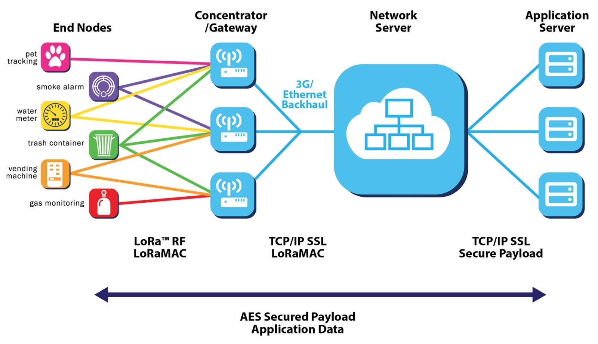

IoT Workshop
Een basis LoRaWAN workshop
Todo:
- Opstelling maken
- Temperatuur meten
- Data versturen over LoRaWAN
- IoT Dashboard opzetten
- Data verzamelen
Opstelling maken

- Arduino Nano
- Spanningsdeler
- RN2483
Temperatuur meten
- Meten m.b.v. een thermistor
- NTC weerstand (Negative Temperature Coefficient)
- Weerstands daalt bij temperatuursstijging
- R @ -10°C ≈ 68kΩ
- R @ 25°C = 10kΩ
- Formule voor te berkenen van temperatuurswaarde
- `T = B / (ln(R_(NTC)/(R_(0)*exp(-B/T_(0)))))`
Temperatuur meten
- Formule voor te berkenen van temperatuurswaarde
- Welke waardes kennen we?
- `B = 4300`
- `R_(0) = 10000`
- `T_(0) = 298.15K` (25°C)
- Wat moeten we nog bepalen
- `R_(NTC) = ?`
- Bepalen mbv spanningsdeler
Temperatuur meten
- Bepalen van weerstandswaarde
- mbv spanningsdeler
- `V_(OUT) = (R2 / (R1 + R2)) * V_(IN) `
- `V_(OUT) = (R_(NTC) / (R_(NTC) + 10K)) * 5V `
- Spanning uitlezen m.b.v. ADC
- `V_(OUT) = ADC * V_(REF) / 1023`
- Als we de twee formules samenvoegen voor het bepalen `R_(NTC)`
- `R_(NTC) = 10k * 1023/(ADC) - 1`

Temperatuur meten
Nu in code
float adc_to_resistance(int adc_pin) {
return (VDIVIDER_R1 / (1023 / (double) analogRead(adc_pin) - 1));
}
float resistance_to_temp(float r){
return NTC_B_VAL / log(r / (VDIVIDER_R1 * exp(-NTC_B_VAL/T0_KELV)));
}
Data versturen over LoRaWAN
LoRaWAN Infrastructuur

Data versturen over LoRaWAN
LoRaWAN Infrastructuur
Data versturen over LoRaWAN
The Things Network
Data versturen over LoRaWAN
Node - RED Dashboard
Data versturen over LoRaWAN
Node - RED Dashboard
Data versturen over LoRaWAN
Arduino Code
#include <TheThingsNetwork.h>
#include <SoftwareSerial.h>
#include <math.h>
const char *appEui = "70B3D57ED000AC9A";
const char *appKey = "8BD3AB3633D3B1EEBCB6BF5B004B6038";
SoftwareSerial loraSerial(10, 11);
#define debugSerial Serial
#define freqPlan TTN_FP_EU868
TheThingsNetwork ttn(loraSerial, debugSerial, freqPlan);
const int RST_PIN = 4;
const int NTC_PIN = A0;
const int VDIVIDER_R1 = 9620;
const int NTC_B_VAL = 4300;
const float T0_KELV = 298.15;
union temperature {
float value;
byte val_bytes[sizeof(double)];
};
float adc_to_resistance(int adc_pin) {
return (VDIVIDER_R1 / (1023 / (double) analogRead(adc_pin) - 1));
}
float resistance_to_temp(float r){
return NTC_B_VAL / log(r / (VDIVIDER_R1 * exp(-NTC_B_VAL/T0_KELV)));
}
void reset() {
digitalWrite(RST_PIN, LOW);
delay(10);
digitalWrite(RST_PIN, HIGH);
}
void setup()
{
pinMode(RST_PIN, OUTPUT);
pinMode(NTC_PIN, INPUT);
digitalWrite(RST_PIN, HIGH);
loraSerial.begin(57600);
debugSerial.begin(9600);
while (!debugSerial && millis() < 10000);
debugSerial.println("-- STATUS");
reset();
ttn.showStatus();
debugSerial.println("-- JOIN");
ttn.join(appEui, appKey);
}
void loop()
{
debugSerial.println("-- LOOP");
float r = adc_to_resistance(NTC_PIN);
union temperature degc;
degc.value = resistance_to_temp(r) - 273.15;
debugSerial.println(r);
debugSerial.println(degc.value);
ttn.sendBytes(degc.val_bytes, sizeof(degc.val_bytes));
delay(5000);
}
Data versturen over LoRaWAN
Gebruikte Libraries
- Reeds geïnstalleerd
- SoftwareSerial: Gesimuleerde hardware
- Math: Complexe wiskundige functies
- Nog te installeren
- The Things Network Node
- Installeren met de library manager van Arduino
#include <TheThingsNetwork.h>
#include <SoftwareSerial.h>
#include <math.h>
Data versturen over LoRaWAN
Gebruikte variabelen
- OTAA LoRaWAN keys
- Seriele poorten
- TTN Object (wrapper voor transciever)
- Gebruikte pinnen
- Constante waardes voor berekeningen
- Union declaratie voor data encodering
const char *appEui = "70B3D57ED000AC9A";
const char *appKey = "8BD3AB3633D3B1EEBCB6BF5B004B6038";
SoftwareSerial loraSerial(10, 11);
#define debugSerial Serial
#define freqPlan TTN_FP_EU868
TheThingsNetwork ttn(loraSerial, debugSerial, freqPlan);
const int RST_PIN = 4;
const int NTC_PIN = A0;
const int VDIVIDER_R1 = 9620;
const int NTC_B_VAL = 4300;
const float T0_KELV = 298.15;
union temperature {
float value;
byte val_bytes[sizeof(double)];
};
Data versturen over LoRaWAN
Berekening van temperatuur
float adc_to_resistance(int adc_pin) {
return (VDIVIDER_R1 / (1023 / (double) analogRead(adc_pin) - 1));
}
float resistance_to_temp(float r){
return NTC_B_VAL / log(r / (VDIVIDER_R1 * exp(-NTC_B_VAL/T0_KELV)));
}
Data versturen over LoRaWAN
Setup functie
- Standaard Arduino functie
- Bij default uitgevoerd bij start up
- Zorgt voor
- Initialisatie pinnen
- Opstarten seriele communicatie
- Verbinding maken met het LoRaWAN netwerk
- Reset functie
- Reset van LoRa module
void setup()
{
pinMode(RST_PIN, OUTPUT);
pinMode(NTC_PIN, INPUT);
digitalWrite(RST_PIN, HIGH);
loraSerial.begin(57600);
debugSerial.begin(9600);
while (!debugSerial && millis() < 10000);
debugSerial.println("-- STATUS");
reset();
ttn.showStatus();
debugSerial.println("-- JOIN");
ttn.join(appEui, appKey);
}
void reset() {
digitalWrite(RST_PIN, LOW);
delay(10);
digitalWrite(RST_PIN, HIGH);
}
Data versturen over LoRaWAN
Setup functie
- Standaard Arduino functie
- Functie herhaald zich constant
- Meet de temperatuur
- Logt de data
- Verstuurt de data
void loop()
{
debugSerial.println("-- LOOP");
float r = adc_to_resistance(NTC_PIN);
union temperature degc;
degc.value = resistance_to_temp(r) - 273.15;
debugSerial.println(r);
debugSerial.println(degc.value);
ttn.sendBytes(degc.val_bytes, sizeof(degc.val_bytes));
delay(5000);
}
Opdracht
- Maak de opstelling
- Upload de code
- Update de Node RED Frontend
- Verstuur de data
Uitbreidingen?
- Meet of dat het licht aan of uit is
- Verstuur de data naar de server